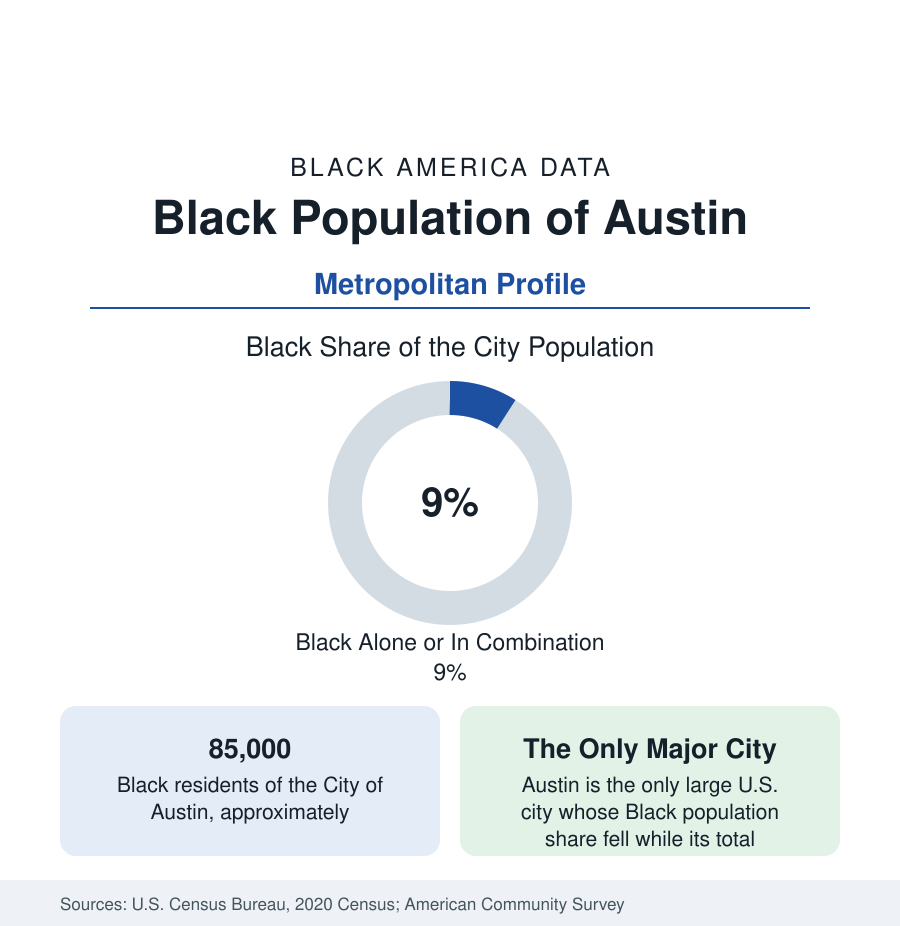

Black Cities
Black Austin: East of the Highway, Priced Out of the Center
Austin holds about 85,000 Black residents in the city and 155,000 across the metro — a shrinking share of a booming city. The census profile.

Austin holds about 85,000 Black residents within the city — Black alone or in combination, roughly 9 percent of its 960,000 people — and about 155,000 across the metropolitan area. Austin's Black profile is the Texas boom's exception that researchers cite by name: the only fast-growing major city in America whose Black population declined in absolute terms during its boom decades, displaced eastward and outward by the very prosperity the city's brand celebrates. This article profiles the population in the census data.
East Austin: The Designated District
Black Austin was placed where it is by policy: the city's 1928 master plan designated the east side as the Negro district (conditioning city services on residence there), and East Austin — the streets around East 11th and 12th, Rosewood, and the districts toward the old airport — held the community's churches, its businesses (the Victory Grill's Chitlin' Circuit stage among them), and its institutions for the rest of the century. Huston-Tillotson University, the city's HBCU formed from two nineteenth-century church colleges, anchors the district's east end. The state government and the University of Texas provided the employment base (the public-sector pattern), the musicians provided the fame, and the district provided Black Austin its address — until the boom repriced it.
The Displacement Curve
The numbers describe the repricing with unusual clarity. Austin's Black share fell from roughly 12 percent in 1990 to about 9 percent in combination counts today, even as the city's total population nearly doubled; the east-side tracts nearest downtown record Black shares collapsing from majorities to small minorities within two decades; and the Black population's center moved to the far northeast and the suburbs — Pflugerville (now roughly a fifth Black in combination counts, the metro's suburban Black center), Manor, Round Rock's east side, Del Valle, and the Colony Park and Dessau corridors inside the city. The university research on Austin's displacement is a small literature of its own (the city's own demographer popularized the 'only major city' finding), and its mechanisms are the national ones at maximum amplitude: appreciation, property-tax pressure on legacy homeowners, and rental turnover, operating on a community whose designated district sat on the closest-in land to a booming downtown.
The Modern Metro Community
The metro's 155,000 Black residents live the displaced geography: suburban homeowners in the northeast corridor, students and professionals around the universities and the tech economy, service workers commuting across the whole map. Employment runs through state government, UT and the universities, health care, and the tech sector — whose Black workforce share in Austin runs below the industry's coastal figures in the technology profile's terms, a gap the city's equity reports document. The institutions have followed the people with a lag: east-side churches selling or staying as landmarks amid new development, Black cultural institutions (the George Washington Carver Museum in the old library building) holding the district's memory, new congregations and businesses building in Pflugerville and Manor. Huston-Tillotson's enrollment and finances are the institutional file to watch.
Change and the Estimates
The estimates show the metro Black population growing again in absolute terms on the suburban corridors — the displacement's second phase, in which Black Austin grows as a metro population while its historic share of the core continues to fall. The age and income data describe a younger, suburbanizing community with medians near the Texas metros' stronger end (Dallas–Houston's figures are the comparators), and a homeownership map redrawn along the northeast arc. The city's policy responses (affordability bonds, the legacy-resident programs) are tracked in the housing data against the appreciation curve that outruns them.
Reading the Austin Numbers
The education data register both sides of the story: Austin ISD's enrollment is now only about 7 percent Black (from a fifth in the 1970s), while the suburban districts of the northeast corridor — Pflugerville, Manor, Del Valle — enroll the displaced generation's children at shares several times higher, making the metro's Black school data a suburban dataset whatever the city's totals say.
Austin is the gentrification profile at its most documented: a community placed by a 1928 plan on the land a boom would later want most, in the only major American city to lose Black population while doubling. Its 155,000 metro residents are not a shrinking community — they are a relocated one, and the data's task is to keep both halves of that sentence attached.
More in Black Cities
Black Atlanta: Population, Distribution, and Growth of a Black Metropolis
Metro Atlanta holds more than two million Black residents — roughly one in three, second only to New York. The suburban distribution, migration history, and composition of Black Atlanta in the census data.
Black New York: The Largest Black Population in America
The New York metropolitan area holds about 3.4 million Black residents — more than any metro in the nation — and the city itself about two million. The census profile.
Black Washington: The District and the Metro
The Washington metro holds about 1.6 million Black residents, and the District itself — long a majority-Black city — now records a Black share near 41 percent. The census profile.
Source: U.S. Census Bureau, 2020 Census; American Community Survey; Population Estimates Program.